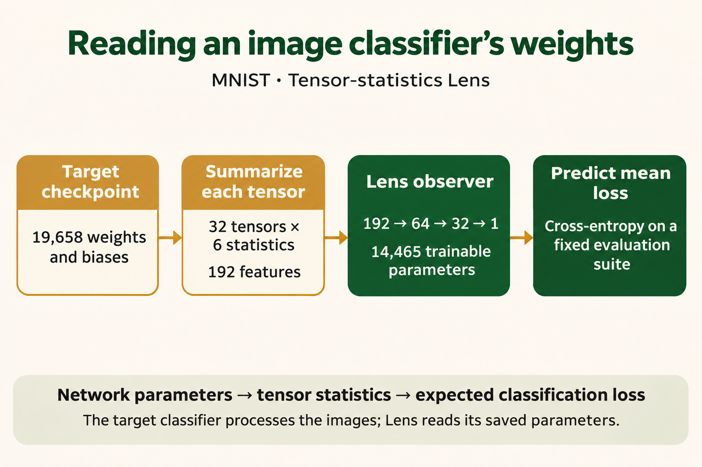

Structure can carry useful signal.
A neuron-invariant observer outperformed shortcut baselines in a controlled output-rewiring study with 40 fresh target initializations. The comparison used one fitted observer and a fixed architecture.
INDEPENDENT AI RESEARCH · DANIEL JACKSON
What can a network’s internal structure tell us about what it has learned?
Synaptic Lens builds learned readers that examine target networks and predict their behavior. Small, controlled experiments make that question concrete.
Conceptual illustration. Inputs vary by reader; the featured Adder Lens uses activations.
A trained network is a record of learning. Synaptic Lens asks how much of that record another model can read.
The project trains separate readers on representations of target networks. Depending on the experiment, a reader sees weights, structured neuron records, arithmetic queries, or query-aligned activations. It then predicts a property of the target, such as its loss or whether it will answer a particular query correctly.
Addition networks provide a controlled starting point: a small architecture, a complete set of 100 ordered digit pairs, and target populations with different initializations and training histories. That makes it possible to examine shortcuts, compare baselines, and see where a promising result breaks down.
The longer-term direction is to build useful representations of learned capabilities and investigate how they can support navigation, localization, and better training decisions.
SYN88 · ACTIVATION-ASSISTED READER
Predicting whether another network gets an addition problem right.
Historical correctness-prediction accuracy
Query predictions in the saved evaluation
Independent target-root families

Canonicalized weights and biases, an arithmetic query, and its hidden ReLU activations from a 20–32–19 target MLP. The reader predicts correctness; target output logits are excluded from its inputs.
The walkthrough selects seed 27 at update 17,000 by the lowest saved validation objective among three released seeds. Downloads use pinned revisions and SHA-256 checks. Inference defaults to CUDA, with an explicit small CPU alternative.
Predict an MNIST classifier’s mean loss from 192 statistics of its saved parameters.

The released tensor-statistics Lens achieved 0.17140 mean absolute error in the saved development comparison, against 0.83429 for the constant training-mean baseline. The comparison covers ten target states from two development roots.
A neuron-invariant observer outperformed shortcut baselines in a controlled output-rewiring study with 40 fresh target initializations. The comparison used one fitted observer and a fixed architecture.
Regional attention improved probability estimates in a matched experiment. Query discrimination and reliable localization remained unresolved, with adverse paired-clone diagnostics.
Learned allocation showed mixed gains and incurred substantial probe cost. Counting discarded updates and inspecting rare failures changed the interpretation of headline metrics.
Code on GitHub. Trained readers and target populations on Hugging Face. Protocols alongside the evidence.
Readers, structured representations, training workflows, tests and documentation.
HUGGING FACE ↗Released SYN88 trajectory readers and SYN53 development-endpoint exports.
HUGGING FACE ↗The historical target-root population, manifests and a small smoke fixture.
HUGGING FACE ↗Weights-only and parameter-statistics observers of image-recognition targets.
HUGGING FACE ↗Trained classifier parameters, coordinate schema and trajectory metadata.
DOCUMENTATION ↗Input contracts, saved comparisons, checkpoint provenance and inference commands.
Daniel Jackson develops Synaptic Lens as an independent research project. AI tools assist engineering and curation. The public repository brings together selected development milestones, research software, model releases and documented limitations.
This overview presents ongoing work and historical experimental evidence. The linked protocols describe the scope of each result and the inputs needed to evaluate it.
Research-use licensing: source code uses AI Pubs RAIL-S 0.1; designated model files use RAIL-M 0.1. See the software license and each release’s terms.